Question: do simulator-native microdetail, interface-shred, and material-detail carriers restore articulated smoke support missing from the frozen 1,024-Gaussian smokeDensity control?
Exact target: 0.74 smokeDensity + 0.42 microdetail + 0.34 interfaceShred + 0.12 detail. Source is R160 simulation step 45, manifest sha256:ab980bee...d1d1a, route native-3d-compute-fluid-raymarch-v0, backend WebGPU:apple.
Witness rules: all panels use the same camera per row, proxy extinction scale 0.2 calibrated once on combined/native, coverage scale 1, and shared display-only exposure 8x. The residual panel is an additive missing-support term, not a standalone reconstruction.
| Camera | Control MSE | Combined MSE | MSE reduction | Combined active IoU |
|---|---|---|---|---|
| Recorded native (calibration) | 1.1884e-5 | 1.0479e-6 | 91.18% | 0.8566 |
| Side +90 (held out) | 1.0217e-5 | 1.1983e-6 | 88.27% | 0.6683 |
| Back +180 (held out) | 1.0657e-5 | 1.1123e-6 | 89.56% | 0.8284 |
| Elevated +35 (held out) | 8.6469e-6 | 2.8065e-6 | 67.54% | 0.8051 |
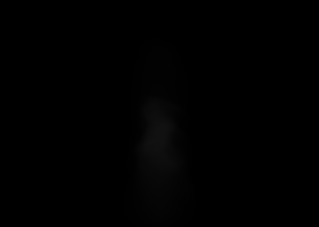
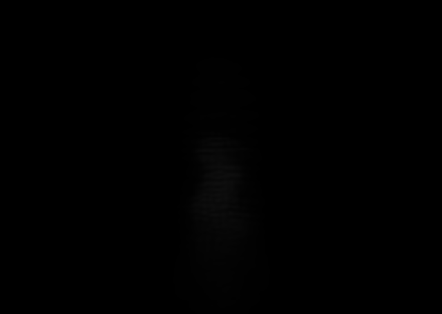
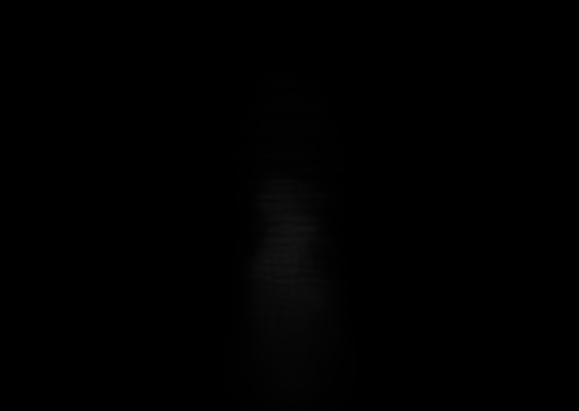
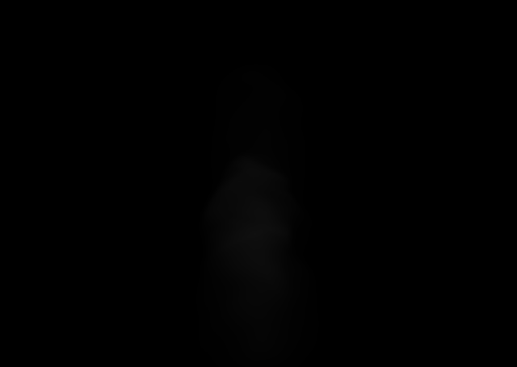
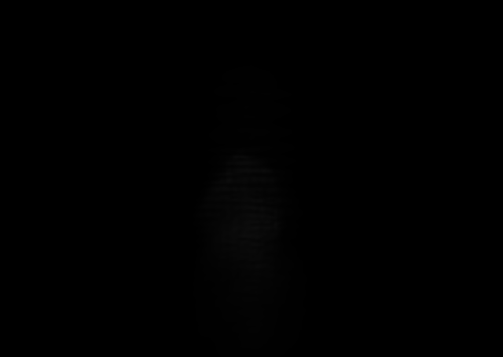
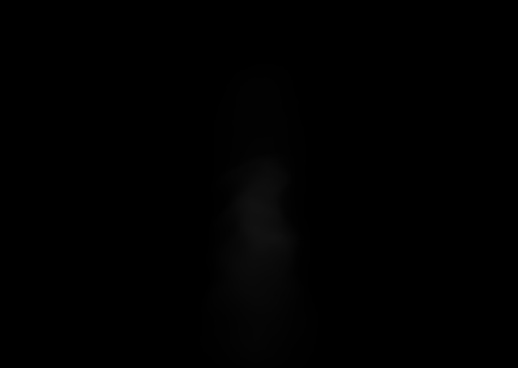
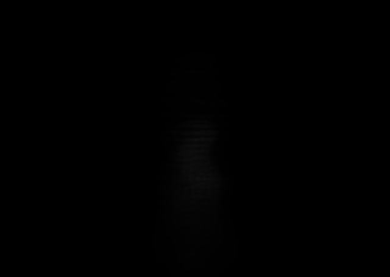
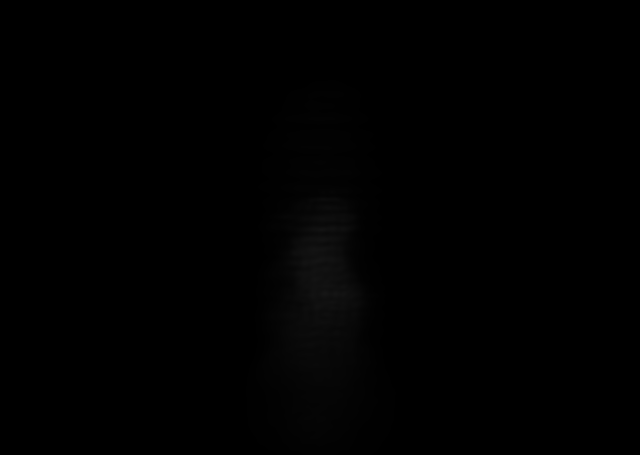
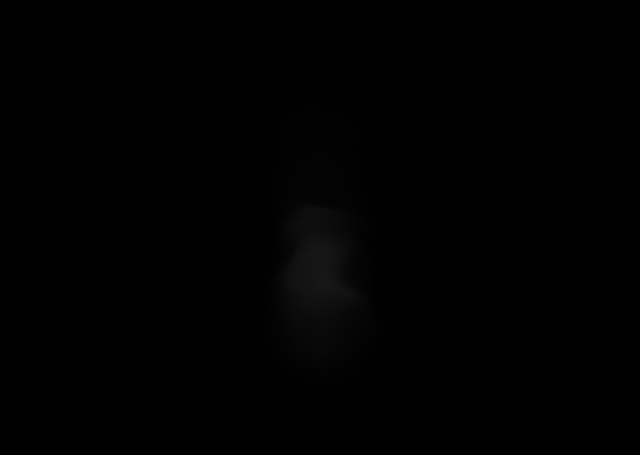
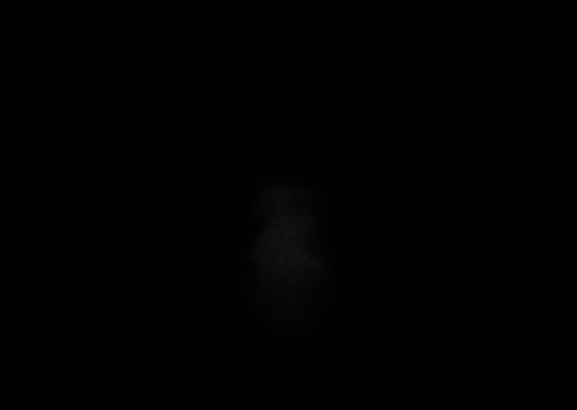
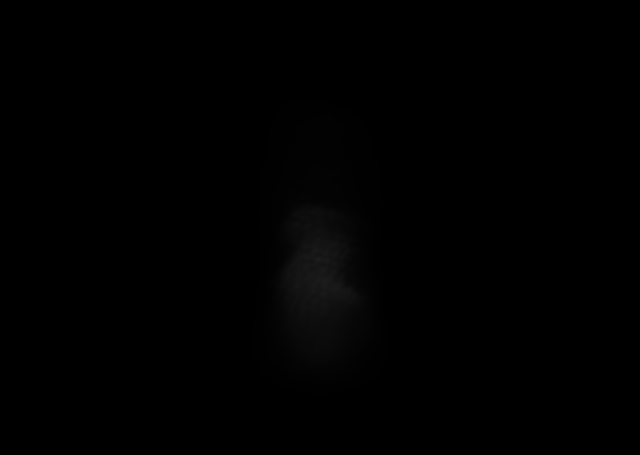